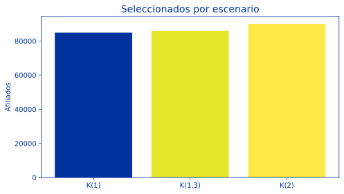

Universo 95,011; seleccionados K(2) 89,917 (94.64%); A 84,884; B 5,033; seleccionados sin grupo 0; fuera 5,094; no evaluables 0. Campos mínimos observables de titular: suprimido por confidencialidad; valoración efectiva bloqueada para todos.
Cada fila corresponde a un afiliado, sin duplicados, según confirmación institucional; se cuentan filas y no se usa la primera columna ni la cédula. COP. Capital +Bono es el capital disponible confirmado. K(1,3) no condiciona selección K(2); el orden entre capitales se controla por separado. Cero es válido; faltantes, no numéricos, negativos y no finitos son no evaluables para cada par correspondiente. Una selección sin K(1) válido permanece seleccionada pero sin grupo A/B. Sexo, tipo y estado registrados no demuestran derechos de sobrevivencia. Las brechas individuales y su suma no son déficit de una bolsa. No se demuestra viabilidad ni ahorro.
Comparación de conteos con la ejecución anterior, bajo reglas equivalentes: coincide.
| segmento | afiliados | porcentaje_universo |
|---|---|---|
| A | 84884 | 89.341234 |
| B | 5033 | 5.297281 |
| seleccionado sin grupo | 0 | 0.000000 |
| fuera | 5094 | 5.361484 |
| no evaluable | 0 | 0.000000 |
| escenario | seleccionados | fuera | no_evaluables | capital_disponible_COP | capital_requerido_COP | mediana_C_COP | mediana_K_COP | porcentaje_universo |
|---|---|---|---|---|---|---|---|---|
| 1 | 84884 | 10127 | 0 | 1.212964e+13 | 4.658695e+13 | 9.390257e+07 | 5.531469e+08 | 89.341234 |
| 13 | 85956 | 9055 | 0 | 1.266020e+13 | 4.990000e+13 | 9.568691e+07 | 5.853258e+08 | 90.469525 |
| 2 | 89917 | 5094 | 0 | 1.508636e+13 | 7.070885e+13 | 1.024551e+08 | 7.960347e+08 | 94.638516 |

| poblacion | variable | categoria | afiliados |
|---|---|---|---|
| seleccion_K2 | sexo1 | F | 49968 |
| seleccion_K2 | sexo1 | M | 39949 |
| seleccion_K2 | Riesgo | GPM | 63811 |
| seleccion_K2 | Riesgo | VEJEZ | 16272 |
| seleccion_K2 | Riesgo | SOBREVIVENCIA | 4769 |
| seleccion_K2 | Riesgo | INVALIDEZ | 2990 |
| seleccion_K2 | Riesgo | SUSTITUCION - GPM | 919 |
| seleccion_K2 | Riesgo | SUSTITUCION - VEJ | 788 |
| seleccion_K2 | Riesgo | SUSTITUCION - INV | 368 |
Las distribuciones con celdas pequeñas se suprimen.
| poblacion | variable | total | validos_o_presentes | ausentes_o_no_numericos | invalidos_observados | porcentaje |
|---|---|---|---|---|---|---|
| seleccion_K2 | sexo2 | 89917 | 47086 | 42831 | 0 | 52.37 |
| seleccion_K2 | sexo3 | 89917 | 8363 | 81554 | 0 | 9.3 |
| seleccion_K2 | tipo2 | 89917 | 47086 | 42831 | 0 | 52.37 |
| seleccion_K2 | estado2 | 89917 | 47086 | 42831 | 0 | 52.37 |
| seleccion_K2 | tipo3 | 89917 | 8363 | 81554 | 0 | 9.3 |
| seleccion_K2 | estado3 | 89917 | 8363 | 81554 | 0 | 9.3 |
| seleccion_K2 | fn2 | 89917 | 47086 | 42831 | 0 | 52.37 |
| seleccion_K2 | fn3 | 89917 | 8363 | 81554 | 0 | 9.3 |
# Diagnóstico de preparación actuarial La selección por capital, la cobertura de campos y la valoración efectiva son conceptos distintos. Los campos mínimos de titular cuentan edad entre 0 y 120 (filtro técnico provisional), sexo F/M, número entero positivo de mesadas, mesada y capitales disponibles válidos. El conteo es un control de cobertura, no garantiza que los datos sean adecuados actuarialmente ni acredita derechos. La valoración efectiva está bloqueada para todos mientras falten parámetros y reglas; el cero no indica que ninguno pueda valorarse una vez se suministren. Las variables sexo2/sexo3, tipo2/tipo3 y estado2/estado3 se describen como registros disponibles, sin asumir parentesco, edad o derecho a sobrevivencia. La interpretación y completitud de los campos fn requiere confirmación; no se calculan edades de beneficiarios. Solicitar a Protección el diccionario y fecha de corte de beneficiarios, edades/fechas válidas, relaciones, condiciones y derechos, reglas de sustitución y concurrencia y todos los parámetros de la metodología. Las tablas cobertura_actuarial.csv y categorias.csv presentan cobertura por universo, seleccionados, A y B; tablas pequeñas se suprimen preventivamente.